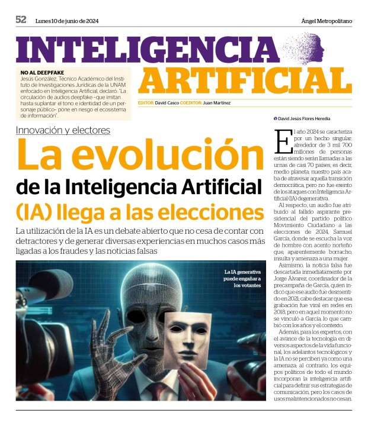
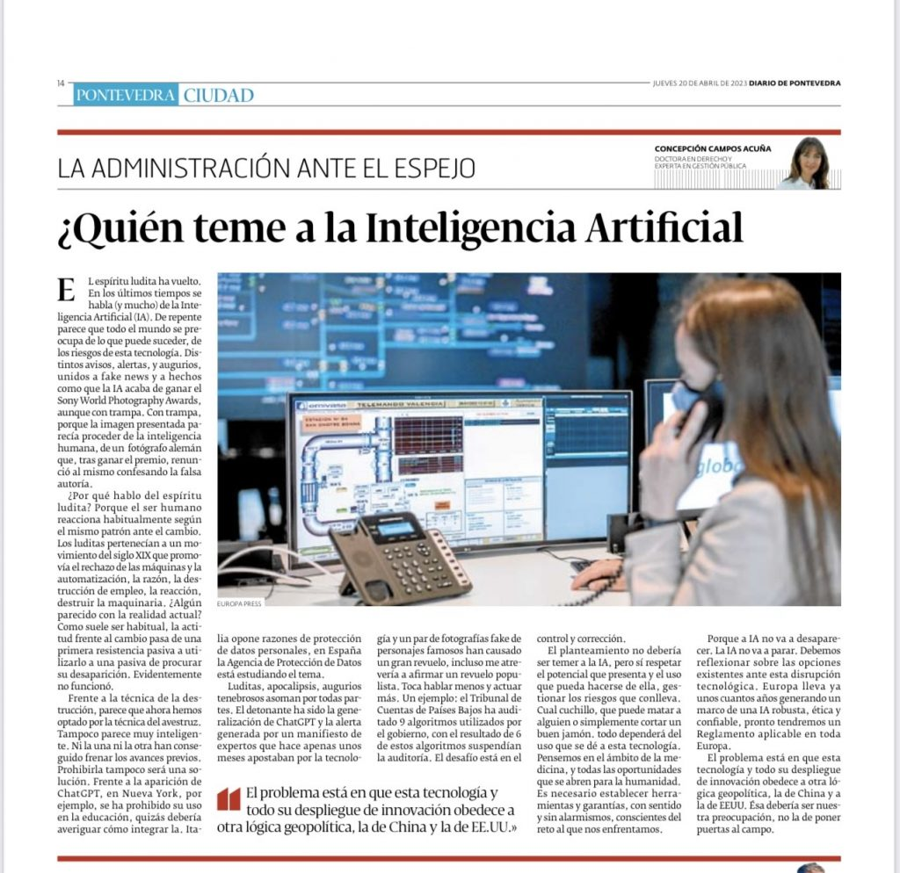
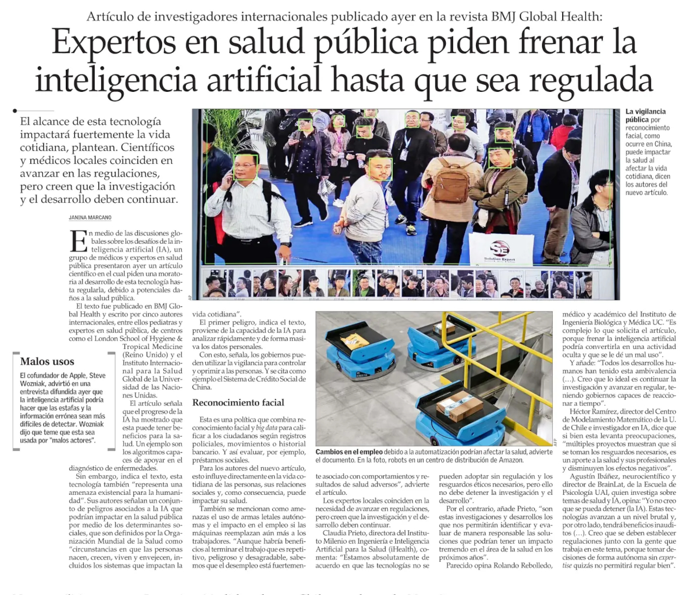

Historia de la Inteligencia Artificial
Aquí te mostramos algunos de los momentos más importantes en la evolución de la inteligencia artificial.


La inteligencia artificial sigue avanzando y forma parte de nuestras vidas más de lo que imaginamos.
Inteligencia artificial: un punto de inflexión histórico
La inteligencia artificial no solo representa un avance tecnológico, sino un verdadero punto de quiebre en la historia de la humanidad. Su desarrollo marca una nueva era, donde el conocimiento, la automatización y el poder de decisión ya no están exclusivamente en manos humanas. Lo que antes parecía ciencia ficción, hoy forma parte de nuestra vida diaria: asistentes virtuales, algoritmos predictivos, máquinas que aprenden y sistemas capaces de razonar con una velocidad abrumadora. Esta evolución no ocurre de manera aislada, sino que se entrelaza con cambios sociales, éticos, laborales y culturales. Incluir la inteligencia artificial dentro del recorrido histórico es fundamental para comprender cómo llegamos hasta aquí y hacia dónde podríamos ir. Es, en muchos sentidos, una extensión de nuestra inteligencia colectiva, pero también un reflejo de nuestros miedos, aspiraciones y contradicciones como especie.
  